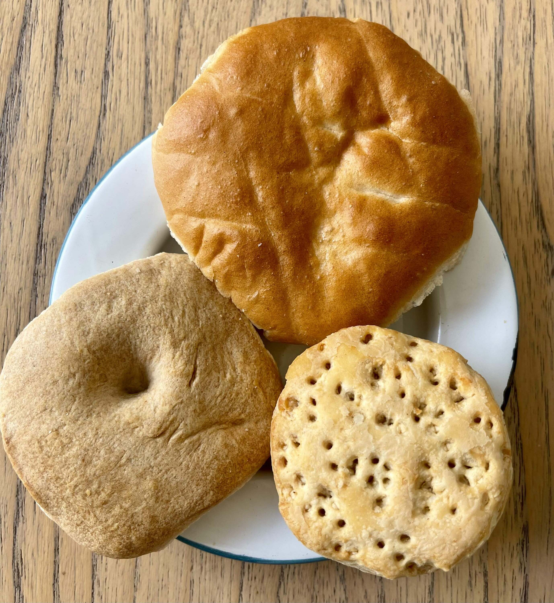
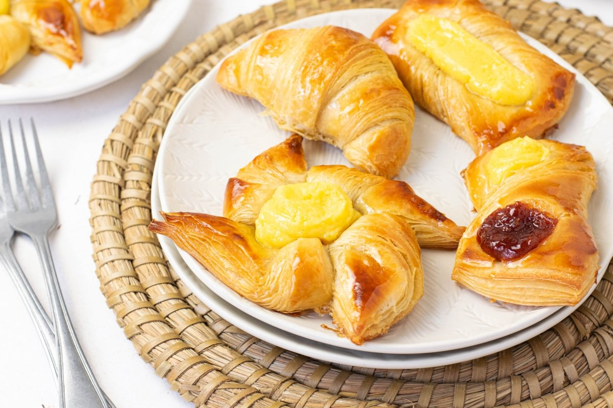
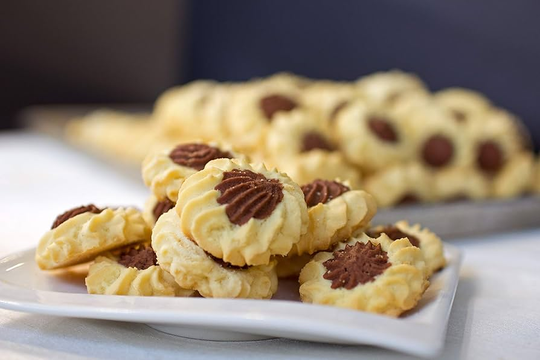
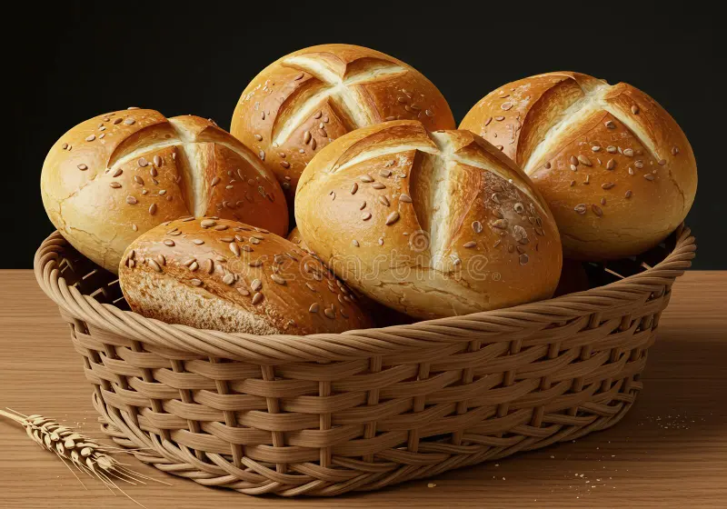
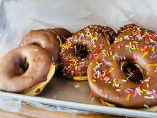
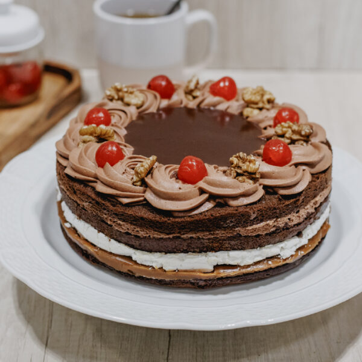

Nuestros productos
En Panadería Los 5 Hermanos ofrecemos una amplia variedad de productos elaborados diariamente para garantizar la máxima frescura y calidad. Desde panes tradicionales y especialidades artesanales hasta facturas, tortitas y productos de pastelería, cada elaboración está pensada para acompañar los mejores momentos de nuestros clientes. Trabajamos con ingredientes seleccionados y recetas que combinan tradición y sabor, logrando productos que conservan la esencia de la panadería artesanal. Nuestro compromiso es brindar opciones frescas, deliciosas y de excelente calidad para toda la familia, todos los días.
Productos
 Contamos con todas las variedades de pan como flauta, felipe, miñon, pan lactal y otras
variedades.
Contamos con todas las variedades de pan como flauta, felipe, miñon, pan lactal y otras
variedades.

Tambien contamos con las mas ricas tortas desde raspaditas hasta caritas sucias, todo para acompañar tus dias
Tenemos las mas ricas y dulces facturas, con crema, con dulce de leche,medialunas y hojaldradas.




